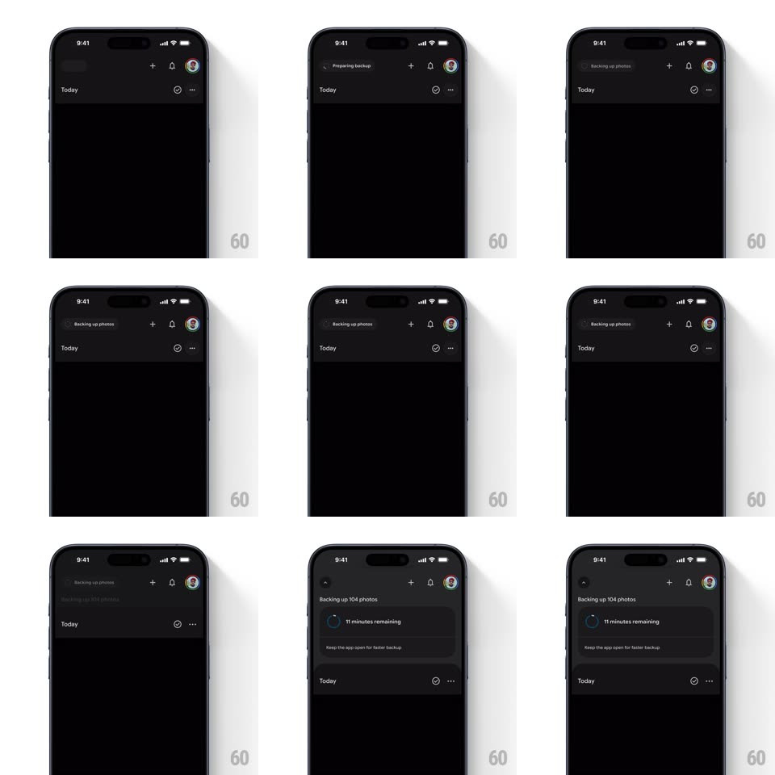

Media
Frame-by-frame

Rebuild this animation 1:1: Google Photos' backup header - the status pill in the top bar spins its logo while backing up, and tapping it expands a detailed progress card that pushes the photo grid down with spring physics.

Rebuild this animation 1:1: Google Photos' backup header - the status pill in the top bar spins its logo while backing up, and tapping it expands a detailed progress card that pushes the photo grid down with spring physics.
## Integration
Integration: stack-agnostic spec - springs given as stiffness/damping, timed motions as duration + curve; map every value to your framework and animation library of choice.
## Scene
Google Photos' dark library: a top bar (Photos logo, add, bell, avatar) over the "Today" grid; a backup status pill sits in the bar ("Preparing backup..." / "Backing up photos") and expands into a card ("Backing up 104 photos", "11 minutes remaining", "Keep the app open for faster backup").
## Motion spec
Pattern: header pill expansion pushing content, ~500ms.
- Spin: while backup runs, the pill's icon rotates continuously (1.2s per revolution, linear, eased ramp-in over 300ms).
- Expand: tapping the pill grows it downward into the full card (height + corner radius animate, spring ~300/24, 450ms); the photo grid translates down with it, same spring, so content feels pushed, not covered.
- Content: the card's rows (count, time remaining, hint) fade up staggered (150ms each, 60ms apart) as the card opens.
- Collapse: tapping again (or the chevron) reverses it - card shrinks back to the pill and the grid springs back up.
- Completion: when backup finishes the pill's icon settles into a check (rotate stops, check draws 200ms) and the pill auto-collapses.
## Calibration
- The grid and the card share one spring - they move as one surface.
- The spin is smooth and constant, never ticking.
## Reduced motion
Rotation stops; expand/collapse crossfades (250ms).
## Don't miss
- The pill lives in the header at rest - the card grows out of it, not from the screen edge.
- Progress text updates live while expanded.